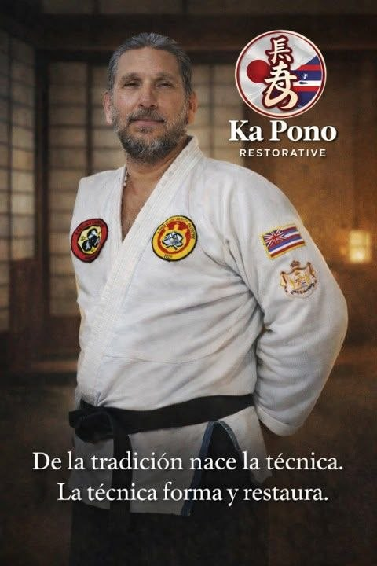
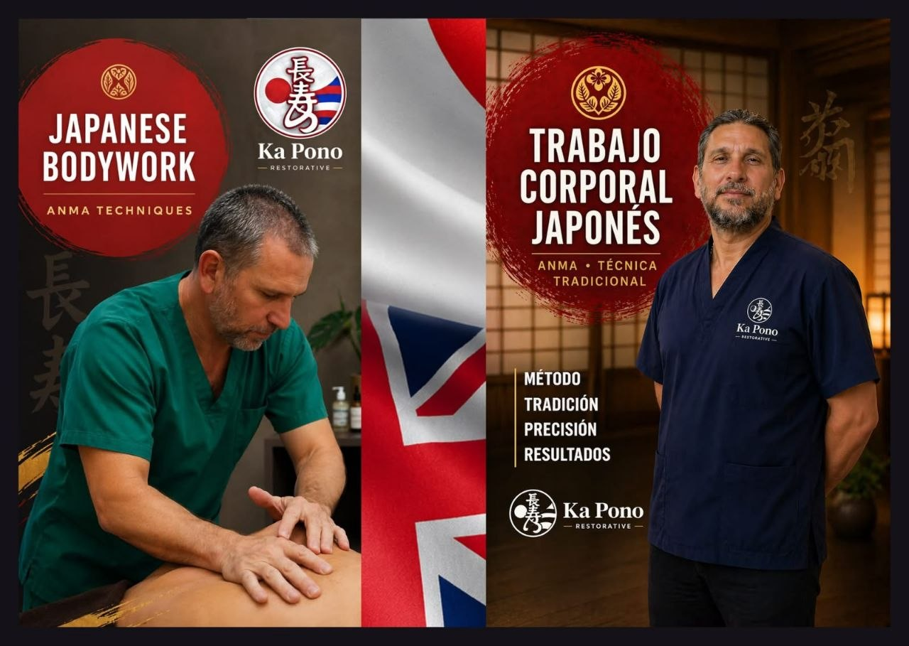

Trabajo corporal japonés
Un enfoque de restauración corporal presentado desde la tradición, la técnica y la precisión.
No es masaje. No es spa. No es relajación superficial. Ka Pono presenta un sistema restaurativo basado en trabajo corporal japonés, disciplina marcial, método y precisión.

Esta página ya no presenta a Ka Pono como un spa ni como una experiencia de masaje. Comunica con claridad su diferencia: una propuesta de restauración corporal vinculada a la disciplina marcial y al trabajo corporal japonés.
Las sesiones se explican desde el método y se consultan directamente por WhatsApp, para orientar a cada persona antes de coordinar.
La propuesta muestra los pilares que distinguen a Ka Pono: una técnica tradicional, un enfoque restaurativo y una comunicación que evita confundir el sistema con relajación superficial.

Un enfoque de restauración corporal presentado desde la tradición, la técnica y la precisión.
Parte de la base técnica que Ka Pono comunica dentro de su propuesta de trabajo corporal japonés.
Una sesión pensada desde la necesidad de cada persona y no como un servicio genérico de spa.
El Seifukujutsu no se presenta como un servicio más. Es parte del currículum, la formación y la identidad de quienes sostienen Ka Pono: una práctica heredada y desarrollada desde la misma raíz.
Datos de trayectoria incluidos como parte de la propuesta y sujetos a validación final con Ka Pono.
“No es lo que hacemos, ni cómo lo hacemos; es lo que somos.”
El sitio puede ayudar a que la persona adecuada entienda el enfoque antes de escribir y llegue a la conversación con mayor claridad.
Una propuesta explicada de forma directa, sin prometer experiencias que no representan el sistema.
La raíz marcial y japonesa se vuelve parte visible de la identidad de Ka Pono.
Una comunicación ordenada para que cada consulta sea más relevante desde el inicio.
Escribinos por WhatsApp para conversar sobre el enfoque restaurativo y recibir orientación antes de coordinar una sesión.
Escribir por WhatsApp